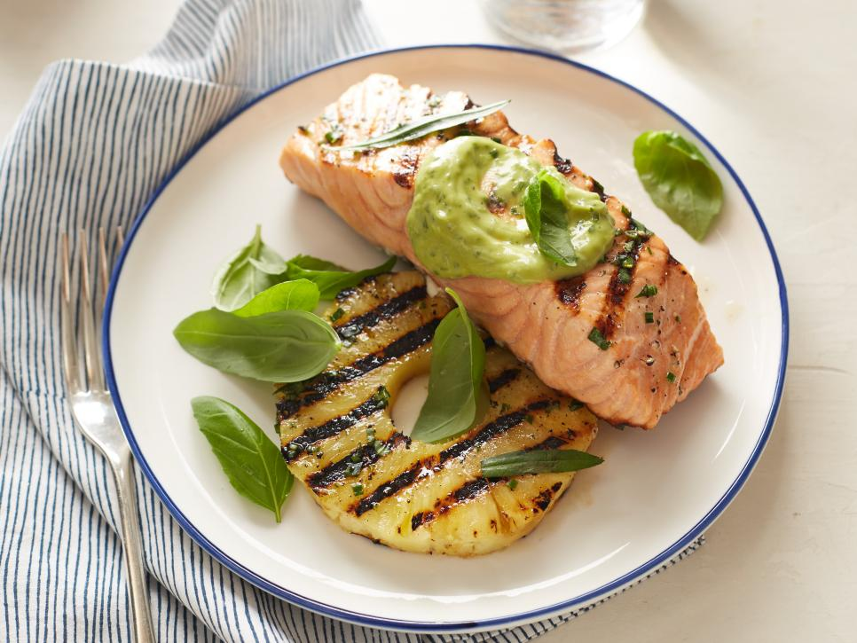

Grilled Salmon and Pineapple
with Avocado Dressing

Description
Perfect for the summer! This grilled salmon and pineapple recipe will make the cook out stand out! And combined with this delicious avocado dressing, your guests are going to be anxiously waiting for your next invitation.
Ingredients:
- 2 tablespoons extra-virgin olive oil
- 1 1/2 teaspoons chopped fresh basil, plus some sprigs, for garnish
- 1 1/2 teaspoons chopped fresh chives
- 1 teaspoon chopped fresh tarragon, plus some sprigs, for garnish
- 1/2 teaspoon kosher salt
- 1/2 teaspoon freshly ground black pepper
- Four 4-ounce skinless salmon fillets, each about 1-inch thick
- Four 1/2-inch-thick round slices (rings) of pineapple, preferably fresh
- Avocado Dressing, recipe follows
Avocado dressing:
- 1/4 cup fresh lemon juice (from 1 large lemon)
- 2 tablespoons chopped fresh basil
- 1 tablespoon finely chopped fresh chives
- 1 tablespoon extra-virgin olive oil
- 1 1/2 teaspoons finely chopped fresh tarragon
- 1/8 teaspoon anchovy paste, optional
- 1/8 teaspoon kosher salt
- 1/8 teaspoon freshly ground black pepper
- 1 small clove garlic, smashed
- 1/2 avocado, diced
Steps:
- Place a grill pan over medium-high heat or preheat a gas or charcoal grill.
- Whisk the oil, chopped basil, chives, chopped tarragon, salt and pepper in a small bowl to blend. Brush the salmon and pineapple slices with the herb mixture.
- Cook the salmon until barely cooked through and still pink inside, about 4 minutes per side. Cook the pineapple until slightly charred, 3 to 4 minutes per side.
- Transfer 1 pineapple slice to each plate and arrange a piece of salmon slightly overlapping it. Spoon 2 tablespoons of the Avocado Dressing over each piece of fish. Garnish with basil and tarragon sprigs and serve.
Avocado dressing:
- Combine the lemon juice, basil, chives, olive oil, tarragon, anchovy paste if using, salt, pepper, garlic and avocado in a food processor. Add 2 tablespoons of water and process until smooth. Cover the dressing and let stand for at least 15 minutes and up to 1 hour for the flavors to blend.